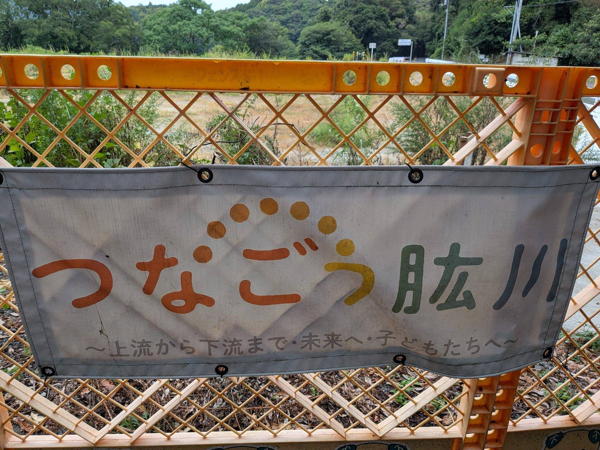

大洲のいま ・ 出典: 大洲市役所 ・ 約3分で読める
大洲市オリジナルの「防災ソング」、アニメーション動画になった

 メモう
メモう
大洲には、にげるときの持ち物をおぼえる歌があるんだよ。
作ったのは市役所じゃなくて、消防団の女の人たち。アニメにもなったんだって。
3行でいうと調べた資料 5本
- 大洲市の防災ソング「ひなんもちだしひんマーチ」がアニメ動画になった
- 作ったのは市役所ではなく、消防団の女性分団の団員たち
- 同じ時期、大洲高校の生徒も肱川の防災を伝えるデジタル絵本を公開している
大洲市がオリジナルで作った「防災ソング」の、アニメーション動画が公開された。９月１日の「防災の日」に向けた取り組みの一環とみられる。
正直、最初に「市が防災の歌を作る」と聞いたときは半信半疑だった。ところが調べてみたら、作ったのは市役所ではなかった。
作詞・作曲したのは、消防団の女性分団だった
曲のタイトルは「ひなんもちだしひんマーチ」。作詞・作曲したのは、大洲市消防団の女性分団の団員だと市のページに書かれている。
内容は、災害で避難するときに家族みんなで何を準備すればいいのかを、歌を通して楽しく学べるもの。
市は「家族そろって動画を観ながら、避難するときのもちだしひんをチェック」してほしい、と呼びかけている。
つまり、広報担当が外注して作らせたＰＲ動画ではなく、実際に現場で災害対応にあたる人たちが自分たちで作ったということになる。この一点だけで、少し見え方が変わった。
そもそも「消防団の女性分団」とは何なのか
聞き慣れない言葉だったので、こちらも調べてみた。
総務省消防庁の調査によると、全国の消防団員は約74万７千人で、前年から約１万６千人減っている。担い手不足がずっと続いている世界だ。
その中で女性の消防団員だけは年々増えている。令和６年４月１日時点で消防団員に占める女性の割合は3.8％。
令和５年時点では27,954人が活動していた。女性団員を採用している消防団は全体の78.3％にのぼる。
消防庁は将来的に女性割合10％を目標に掲げ、当面は令和８年度までに５％という目標を置いている。まだ道半ばということになる。
女性分団は、火災現場での消火活動より、予防啓発・広報・住民への呼びかけを担うことが多いとされる。
歌を作って子どもや家族に届けるというのは、まさにその役割の延長線上にある活動だった、と考えると腑に落ちた。
同じ時期、大洲高校生も動画を出していた
調べていて気づいたのだが、ほぼ同じ時期に、大洲高校の地域共創部もYouTubeで動画を公開している。
タイトルは「みんなで守る 肱川のみらい」。７分19秒の「デジタル絵本」形式の作品だ。
テーマは平成30年（2018年）の西日本豪雨からの復旧・復興と、肱川流域での防災・減災の取り組み。
部員たちは流域の住民に話を聞くフィールドワークを重ね、災害の記憶を自分たちの言葉で次の世代につなごうとしているという。
行政の側から出てきた「歌」と、高校生の側から出てきた「デジタル絵本」。
作り手も年齢もまったく違うのに、どちらも「防災を身近な言葉で次の世代に手渡す」という同じ方向を向いているのが面白い。
歌で防災を伝えるのは、大洲だけなのか
これは大洲独自の発想なのか気になったので調べたが、防災ソング自体は全国的に見られる手法だった。
防災士の資格を持つ落語家が親子で歌う「防災ソング 今すぐはじめよう」や、ヒップホップグループのスチャダラパーによる防災ソングなど、民間発のものも複数ある。
自治体レベルでも、東京都大田区の「防災＋運動会」という発想の防災訓練「まもりんピック」や、広島県の「キッズ防災士」など、子どもに楽しく届ける工夫は各地で試みられている。
ただし正直に書いておくと、「防災ソングを流したことで実際に避難行動が変わった」という効果測定のデータまでは、今回の調査では見つけられなかった。
歌やアニメは入口としては優秀でも、そこから先の効果を数字で示すのは難しい領域なのだと思う。
ハザードマップや避難訓練の案内だけでは、子どもや若い世代にはなかなか届かない。
歌やアニメーション、そして高校生自身の言葉によるデジタル絵本という形にすることで、「防災」という重いテーマが少しでも身近になるなら意味があると思う。お子さんと一緒に見てみるのもいいかもしれない。